This page will teach you the software tricks I used to fix my Lenovo X1 Fold for Windows 11.
With this information in hand, hopefully you will be able to fix yours too!
If you already have Windows 11 installed, you can try to skip to:
- section 2.4 to remove the apps that are useless or just compromise performance or stability (or both!)
- section 3.1 to deploy scripts to prevent Intel drivers crashes from making your system unusuable
- section 3.3 to disable connected standby and re-enable hibernation if needed
- section 3.7 to deploy scripts to prevent Intel drivers bugs from eating your battery randomly during sleep
However, I'd recommend a reinstallation from scratch on an empty drive.
If you prefer Linux, I'm also preparing a Linux guide. It's still a work in progress, but I personally plan to get Arch working fine on my Fold. How I do that will be linked from here when it's ready!
By the way, I don't have 5G on my Fold, so if you run into problems with 5G WWAN I won't really be able to help - though I'd be happy to! I've tried to buy a 5G Fold but it's just not available in the US :-(
So if you happen to work at Lenovo or Microsoft and can provide me with a new X1 Fold WWAN (yes, I'll pay for it, and no, I don't want your used/refurbs you are selling on ebay!), get in touch, and I'll be happy to extend this guide!
0. Introduction
0.1 What you'll get from this guide
What this guide will teach you is how to get a Fold where everything works perfectly.
Long story short, this is done by getting a "Signature Edition" experience of Windows 11 (currently 21H2, build 22000.708, Experience Pack 1000.22000.708.0) with all the pointless cruft surgically removed, even when Lenovo tries it best to make it hard - then deploying countermeasures to work around Intel drivers bugs than Intel insist DON'T EXIST.
However, as if by magic, turning off some functions at specific times before sleep will remove most powersaving bugs and BSOD crashes. If Intel says the truth, I guess I must just be lucky lol
0.2 Why the Fold is my favorite device
First I got a Fold for reading books from my Onedrive, then I found myself hacking with it, spending more and more time on Bash and Vim than I thought I would!
That's when I realized the Fold had embedded itself so perfectly into my life I had to fix the small (but infuriating!) bugs that prevented me for exploiting it to its full potential.
There is something unique and special about the Fold: it's a lovely device that fits perfectly in my purse, supports my Wacom pen for drawing schematics, has an OLED screen for dark-mode-late-night reading or hacking sessions, and great multitouch support.
But that's just the hardware bonuses: the Fold can also act like a normal Windows computer, so I can use either Microsoft Windows On Screen Keyboard, or the equally wonderful Lenovo wireless keyboard. And if I want a fullsize mouse and keyboard, I connect it to my USB-C dock to use my regular peripherals (and 4k OLED external screens...)
I can code with Vim inside a Windows Terminal, and I can also reboot the Fold into a native Linux (WIP: there are still a few driver issues, but it's extremely promising), say if I want to do NTFS backups or other "complicated" things.
There's just no equivalent on the market in 2022: an iPad Pro with a good keyboard has no OLED and won't fold (well... it technically CAN if you are REALLY strong... but only once!)
Oh, and forget about having a native terminal experience as it's an iPad, locked down to the extreme.
And yes, I've tried the Macbook M1, but I don't care much about the battery life or the CPU performance if it's so big and clunky I won't even bother bringing it with me (yes, I think the Macbook Air is too big, if it's too small for you, lucky you, you can size up to a Pro, while there's nothing smaller for me)
However, with the Fold, I've got everything I need, always ready, with the Windows experience I like so much.
All this came to me while I was hacking my scripts at the breakfast diner while waiting for pancakes: that's when I realized I go litteraly everywhere with my Fold!
I would rarely if ever bring a laptop for breakfast (even a smaller X1 Nano), but for whatever reason, I bring my Fold along!?!? What kind of magic is that?? Hats off to Lenovo for making this wonderful device that integrates so well with my life!
(illustrative pictures shamelessly lifted from https://www.lenovo.com/us/en/thinkpad-x1-fold/)
And yes, it folds fully (180 degrees) and you really CAN'T TELL WHERE THE CENTER FOLD IS when it's fully opened and flat like a pancake!
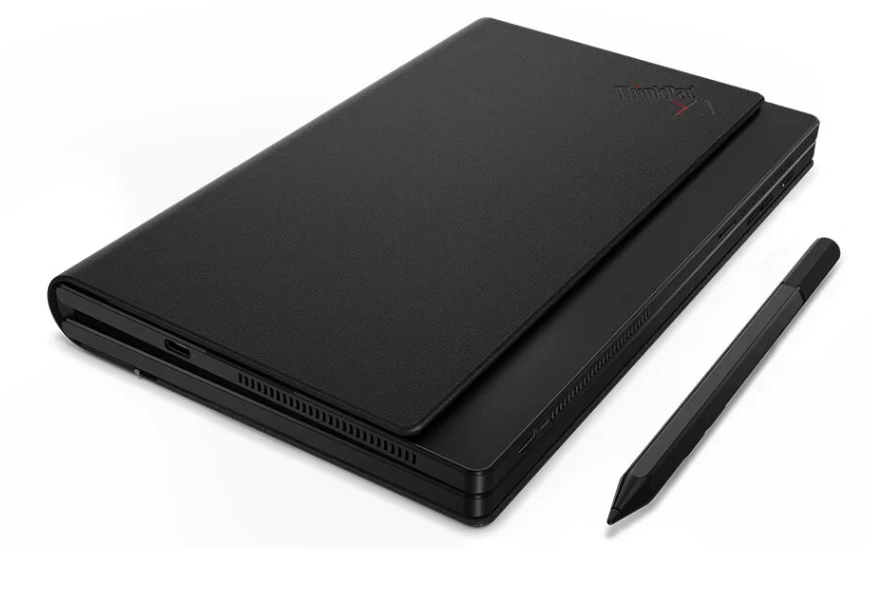
0.3 What power savings ACPI S01x sleep can achieve
For me, the best feature is a modern ACPI S01x Sleep that barely touches the battery: the discharge rate is between 0.5%/h (best) to 1%/h, the latter if you want to use the Fold to play music to your Bluetooth headphones (thanks but no thanks, I'm an audiophile snob lo)
This is genuine sleep, with immediate resume, without ever using ACPI S4 hibernate which is slow to wake up and tax your NVMe TBW budget!
0.3.1 Mixed used results during the weekend
As you can see yourself from a `Powercfg /sleepstudy /duration 1 /output $home/sleeptudy.html`
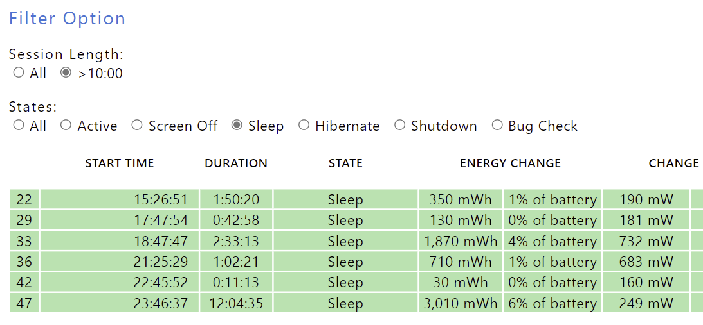
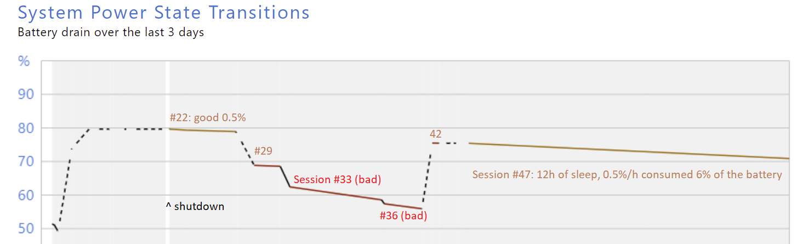
There are 2 cases which are easy to separate using the slope of the discharge curve:
- 0.5% (light orange) like session 22, 29, 42, 47 (note how session 29 was misclassified by Windows, while the slope and a glance at the energy change above with basic maths says it's 0.5%/h)
- 1% (dark brown) like session 33 and 36, a "worst case" scenario, if you have using the modern features of S01x, like waking up your fold intermittently to switch tracks while streaming audio by Bluetooth to your wireless headphones (for the best quality, be sure to disable AAC with RegEdit if you have LDAC or AptX-HD support)
0.3.2 Typical results on a weekday
Just to be clear: this "1%/h" mode is fully optional: if you don't need your fold to play wireless music during sleep, it will lose 0.5%/h regularly, like a clock.
Actually, this is how I use my Fold, because this provides the most reliable experience:
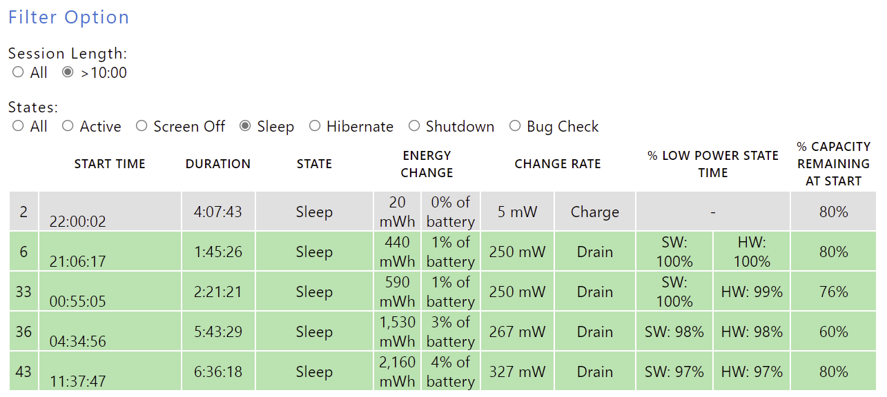
In session 43 above, the results might be slighly more typical because I left the WIFI on, while it was turned off at night for the other sessions (6,33,36)
If you need a better estimation, do a longer sleepstudy!
For example, here I did 30h 53 min:
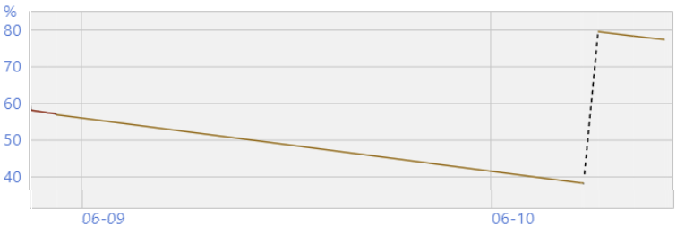
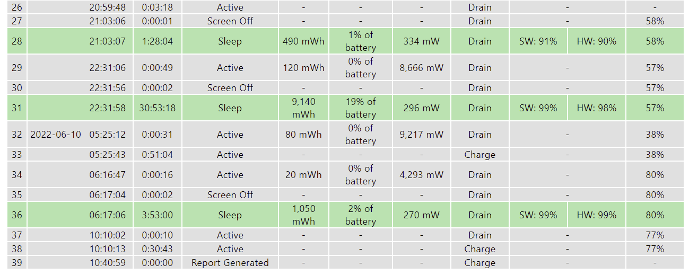
That's 30*60+53=1853 min or 30.883_ hours, 19%/80.883= 0.6152_ so about 0.6% per hour
Not bad!
0.3.3 The battery is only at most 80% full
In the graphs above, you may notice the power charge never goes to 100%.
This is on purpose: to maintain the Fold battery health in the long run, I've capped the charge to 80% using Lenovo Commercial Vantage, which is why 80% is the "ceiling" - yet if I'm putting the device to sleep with 75% of the battery and 12h later I find myself with 69% left, there's more than I need!
During regular use, expect to lose 10% to 25% (full brightness on light content) of the battery per hour.
Yes thats a lot, and yes I'm working on improving that, but for a reading device that's ok with me: I hardly read more than 2h continuously without taking a break.
If I'm coding, it's connected to my charging dock (which supports ThunderBolt while unfortunately the Fold doesn't), and if I'm at a cafe, there're plugs everywhere!
0.4 Hardware suggested for charging
I've been testing different AC adapter to find the smallest one I can take with me: you can see that on the dotted line, which has inflection points showing where I switched from a charger to another.
If you want to follow that in real time, I recomend the McDodo cable https://www.amazon.com/Charging-Display-Braided-Compatible-GalaxyS20/dp/B09MS545VF/ with a GaN adapter.
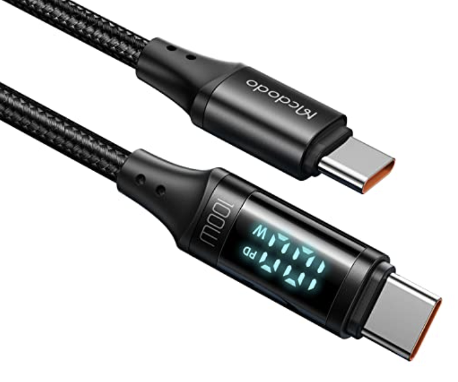
There are many good brands of GaN AC adapter like Anker, but personally like the AOHI which exists both in a tiny 30W cube https://www.amazon.com/dp/B097BWY4WG ideal for transport and a chubbier 65W https://www.amazon.com/AOHI-Charger-Magcube-Adapter-Notebook/dp/B09F2F91QW if you need a very fast charge: the Fold will happily requesting and charge at 65W with the AOHI that's physically smaller than Lenovo 65W GaN .
_Optimization/pasted_image002.png) 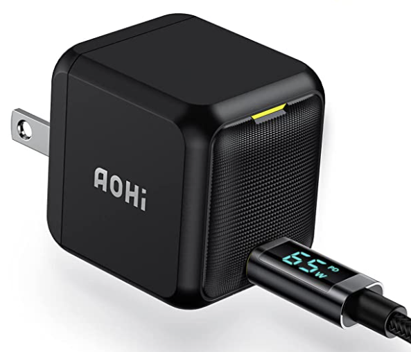
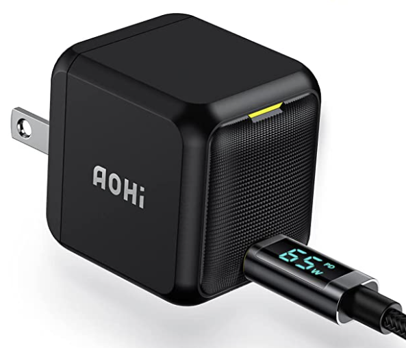
The AOHI conveniently come with a cable showing the power drawn: I plug the cable the other way, with the end featuring the screen on the Fold side, to be directly visible and see how much power the Fold is drawing almost in real time :-)
0.6 What are the issues with a default install
Long story short, the out of the box experience (OOBE) sucks. It's barely usable because of 3 core issues: to support gimmicks like the magnetic keyboard 1) a poor user interface that's 2) generally slow with frequent crashes with 3) bad power saving on top of it.
Fixing them requires investing a few hours to clean up the default install - and that's if you're lucky enough to be well versed in ACPI / Windows / Scripting etc., while most people aren't. No wonder the reviews were unanimously bad.
Yet I really wanted a Fold and figured I could fix it... and I did!
So this guide is here to correct the sad story of the world first foldable computer: I want to give it a happy ending.
As a product, the Fold should NEVER have been allowed to ship like how you get it: this level of negligence sometimes bordering on malice destroyed any possible chances of success for what's otherwise a wonderful device!!
As you will see below, here are many bad decisions piled on top of worse decisions, like why add a pooly written piece of sofware that wastes power to control hibernation instead of fixing the hibernation sleep budget trigger value? Really, Lenovo, why?
0.6.1 Windows 10 UI doesn't benefit the X1 Fold
Windows 10 is missing snap and rotation features that are essential on a device like the Fold where you'll often want to segment the screen between 2 applications, then have them "stay in place but rotate in position" when you physically rotate the way you hold your Fold.
Imagine for example you have the Fold in landscape mode, with a PDF opened on the left, and a text editor on the right: when you rotate to portrait mode, you would expect the PDF to be above the text editor if you did a clockwise rotation, and below if you did a counter clockwise rotation, right?
Unfortunately, on Windows 10 these sane defauts require some poorly written Lenovo software.
0.6.2 Generally slow, with frequent crashes
The X1 Fold was shown with Windows 10X during the CES 2020: https://www.neowin.net/news/ces-2020-another-look-at-windows-10x-running-on-the-lenovo-thinkpad-x1-fold-video/
When Windows 10X was cancelled, Lenovo had to scrape by whatever engineering resources they had in the midst of the pandemic to hack something on top of Windows 10, at least to make it work more or less like it should have if the Fold had been released with 10X.
I'm sure they did the best they could with what they had in these bad circumstances, but it's generally a castastrophic user experience: if the unanimous bad reviews didn't convince you, try for yourself the Fold with the vanilla software for like a week.
I did, and I really wanted to love my Fold, but I couldn't. I tried hacking a few things here and there to make it better, but even with a lot of love and patience, I couldn't take it anymore when it suddently froze out of nowhere (not even a bluescreen, just freezing!) one last time.
If even a Windows fangirl can't stand it, what are the odds you will?
0.6.3 Bad power savings
The OOBE is bad, really bad, and the Intel SST sound + wifi drivers are to blame in a large part, even if Intel loves to denies it: just for fun, read
https://community.intel.com/t5/Graphics/Intel-Smart-Sound-Tech-Battery-Drain-In-Sleep/m-p/668109
Yes, Intel may have (im)plausible deniability due to multiple possible causes, including poorly made BIOS that often require manual hacking to work like a laptop should, like saving power when closed in a backpack instead of being a fire hazard (Dell, I'm looking at you, people shouldn't need to fix your BIOS https://github.com/psyq321/Dell5750FirmwareOptimizationRecipe if you did your work correctly, and there're too many people saying the same thing for that to just be badmouthing your brand: https://news.ycombinator.com/item?id=31715364)
However, as we will see here, at least on the Fold Intel is 100% to blame for most of the power saving issues, which are the direct cause of the freezes and weird hardware issues.
0.6.4 Yes, it's 100% on Intel!
For example, here's what will happen far too often with ACPI S01x sleep if you don't mute the volume or turn off the Wifi:
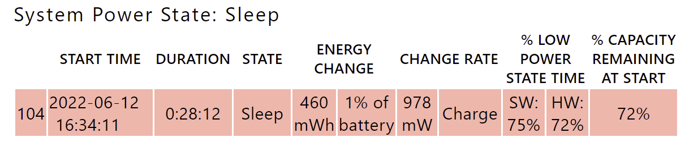
1% of the battery in about 30 minutes is like 2% per hour!
Guess where it comes from?
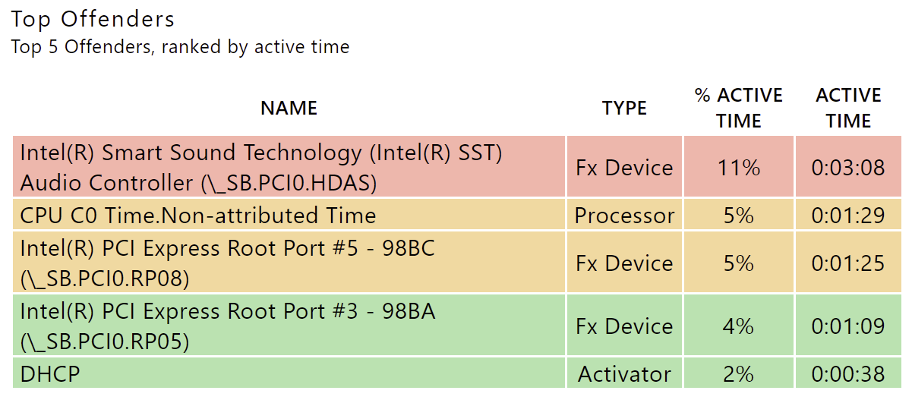
And that's a "not so bad experience" as 11% is on the low side: I've had sleep sessions at 100% active time.
Can you guess what's connected to 98BC?
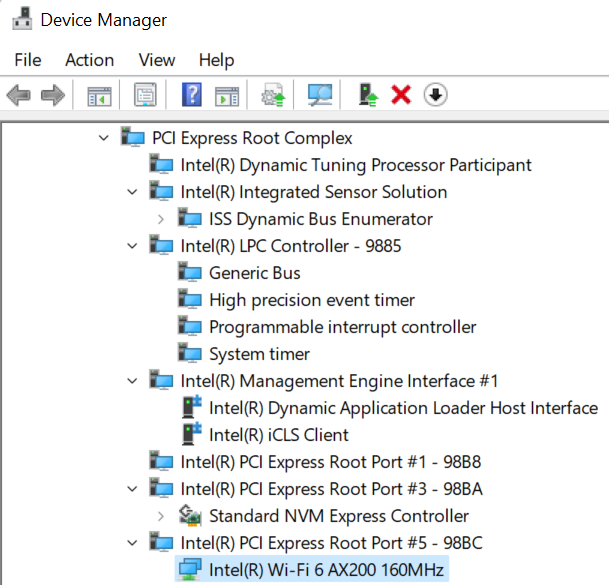
The solution is simple: press Win+A then turn of Wifi and mute the volume:
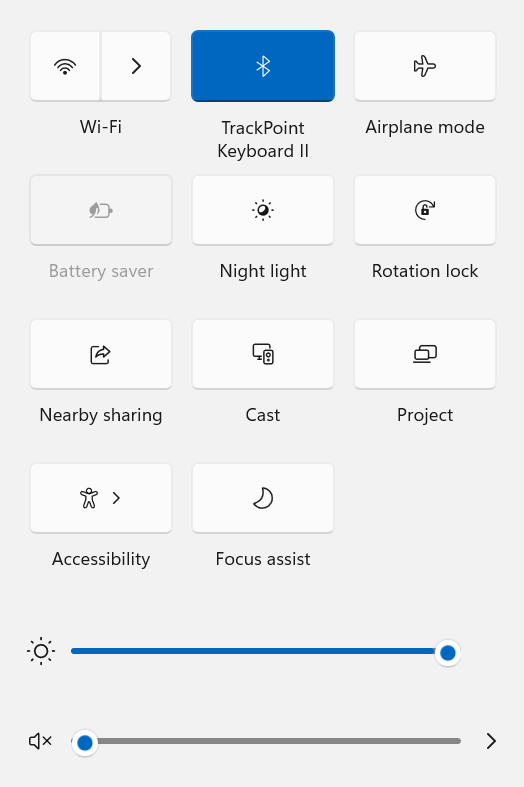
You have to do that every time, or eventually it's going to gobble your battery when you least expect it, and Windows 11 may not even detect the issue so it can't warn you in a powercfg energy diagnostic mode.
For example here's what happens when just the sound is turned off, with the Wifi still on:
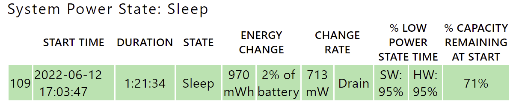
2% in about 1.5 hours is an underappreciation due to the rounding up to the nearest full percentage. I should have waited another 10 minutes...
As you can see in the top offenders, the PCIe port of the Wifi card wasn't asleep 100% of the time.
This is often the only "symptom" of the misbehaving sleep:
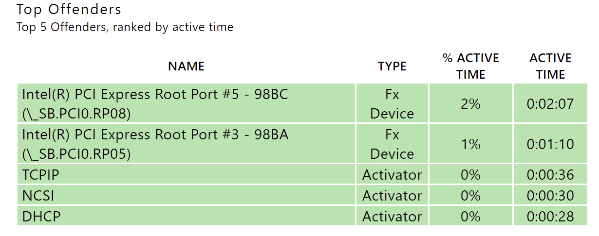
But fear not, as we'll deploy simple yet efficient countermeasures: some basic Powershell + Windows Task Scheduler can restart the misbehaving hardware before worse things happen.
0.6.5 Windows 11 is not a cure-all
Windows 11 is good and makes many things much better on the X1 Fold (all the screenshots here are from Windows 11), but even after installing Windows 11, some serious issues remained even outside S01x power saving.
It was very surprising, as the type of issues were very different: unlike with Windows 10, on 11 I was mostly getting BSODs, and not just some random BSOD but these specific 2 error codes:
- a crash with error 9f, PCIEe ASPM related, due to the Intel SST drivers, while Intel may deny the issue it's been known for a long time and even confirmed by Microsoft: https://www.techworm.net/2021/11/microsoft-intel-sst-audio-driver-bsod-windows-11.html along with trusted users of other laptop brands like https://community.frame.work/t/windows-11-bsod-bug-check-0x9f/11617/15 (BTW, this is D Howett, so even if you may not trust my analysis, maybe you'll trust his...)
- a crash with error 14f (watchdog related) which I've found happening for some large 100W USB-C AC related, something which was far more interesting to debug!
0.6.6. The 0x9 critical error / bugcheck code 159
But first things first: if in the Event Viewer you get the critical 0x9f error (0x9f is 159 in decimal), you can explore the issue further with WinDebug: you will see it's indeed caused by power saving issues IntcAudioBus.sys. Yes, Intel drivers suck, and Intel should stick to hardware, nothing's new under the sun.
And yes, updating the SST drivers helps a bit, but it's not a cure all: even with the latest updated drivers, this error 0x9f can still happen!
As you can see below, here's what I get whenever I've tried to remove my countermeasures:
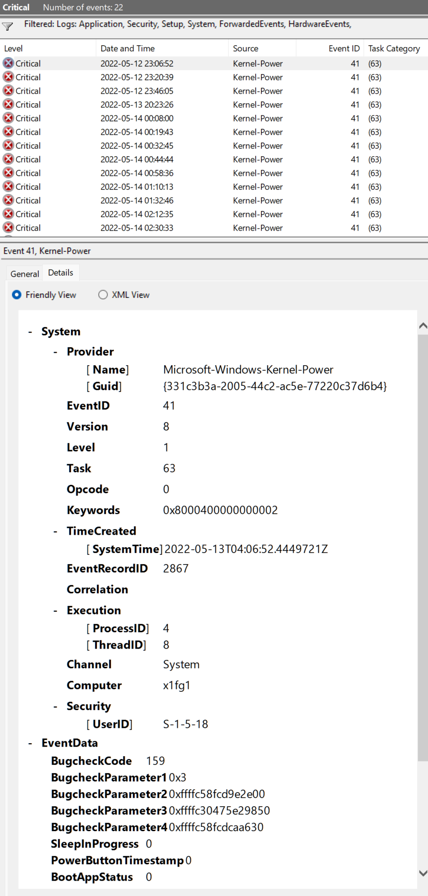
0.6.7 The 0x14f critical error / bugcheck code 335
The 0x14f error was something very different!
Actually, this 0x14f is why I'm suggesting specific AC adapters and power cables: I was using a no-name AC adapter I got off Amazon. It's large, reportedly 100W, and never caused me any problem before, even with very powerful (and therefore very power hungry) Lenovo Workstation ""laptops"".
But this may have just been due to luck, or Lenovo expecting and thus taking into account directly in the firmware the possibility that the AC adapter would sometimes be unable to provide what the system requires, even if the AC adapter said it would before like during the power negotiation!
For a 1st generation product like the Fold, they may not have had enough feedback to do that yet. Also, the Fold is unusually power hunger: with a known-good USB-C Power Delivery charger from a respected brand like Anker and a MacDoDo cable as recommended above, I've seen the Fold draw 65W: this is a LOT of power, enough to be a fire hazard with the wrong cables or counterfeited AC adapter!
After realizing the AC adapter I was using was probably a dangerous fake (as the control panel was showing peripherals dropping on and off), I didn't investigate much further: the watchdog being triggered so rapidly that it caused a BSOD 0x14f (possibily due to a race condition or a buffer overflow, given how inconsistent it was) was probably a good thing!
0.7 Don't waste time trying to make the default installation work
I tried myself, so you don't have to waste time too: Windows 10 on the Fold just can't be fixed, as even if you removed all the guilty parties to stabilize it the best you can, you'd be missing the many Windows 11 exclusive features they were trying to mimick - and yes, by exclusive I mean they don't exist in Windows 10!
This mess is the result of the bad interactions between Microsoft cancelling Windows 10X + Lenovo being bad at writing software + Intel being unwilling to admit its mistakes and trying to leave of job of writing good drivers to OEM manufacturers who apparently can't.
These already compounding issues made far worse by a lack of any kind of synchronization between these 3 large companies. I don't think I'm a bad person, but after documenting here a few of the many weird things I've seen... I sincerely hope some people will get fired over their bad decisions in the X1 Fold launch - at least before they get the chance to ruin another unique and promising product!
1. Removing cruft (bloatware, spyware, whatever)
Before anything else, try starting the device with what it came with (the most likely is Windows 10) if only to confirm everything """works""": I'm using many quotes because the Fold does not work reliably on Windows 10 by any definition of "reliably".
You should also do that to check if it came with a Windows 10 Pro license - if not, go buy a Pro or Workstation key: my go-to place is ebay because there are many sellers, providing a fully automatized experience with no delay unlike Microsoft online store which is also far too expansive.
There is no difference between Windows 10 and Windows 11 keys, so buy whichever is cheaper!
1.1 Goal: a Microsoft "Signature" device
We could try removing things one-by-one, a long and tedious process with uncertain results : Microsoft started the "Signature" program a long time ago, to sell PCs without bloatware: see this page from 10 years ago https://liliputing.com/2012/05/microsoft-signature-series-windows-pcs-without-bloatware.html
We'll aim for just that, but with the guaranteed results that come from a much simpler approach: "Kill Them All And Let God Sort It Out!"
1.3 But first nuke it from space!
After you have confirmed everything more or less works on the Fold, boot on a Ubuntu 22 or similar (there are many tutorials explaining how to prepare a Ubuntu thumb drive...), as you will need a recent kernel for the "exotic" X1 Fold hardware.
When Ubuntu shows you the install screen, you can ask for a terminal with the magical Ctrl Alt T shortcut. `Then start gdisk /dev/nvme0n1`
Save the existing partitions content if you want (cat or dd and gzip to an external storage device), then clean them out with a nuclear option: delete every existing partition, down to the very last one (so that means including the Windows RE to reinstall the Lenovo crapware that it came bundled with, and the EFI partition too)
A great alternative to Ubuntu is Arch. I like Arch a lot, and Archboot just released a 202206 image, but it may not be for everyone, while : https://gitlab.archlinux.org/tpowa/archboot/-/wikis/Archboot-Homepage
We could try to optimize, like with the 4k alignment or whatever is ideal for the UMIS, but why bother? Windows 11 will create all the partitions it needs right where it wants them to be!
1.3 My personal philosophy: keep it vanilla whenever you can
I like to keep things as simple and vanilla as possible: I prefer minimalism and not changing defaults if I can live with them.
Yes, I *do* think twice before changing defaults, because it can have cascading effects due to the complexity of software interactions.
Yet, I want enough free RAM and CPU cycles to get a very responsive device.
This is why I try to keep configuration and installed software to a minimum (ex: only one browser), and avoid doing this like running "debloating" or "anti telemetry" scripts: I've found not doing any of this results in a device that is more stable and works better by updating without issues.
Microsoft is a big company, I'm sure they are going their best for the default experience to be as good as possible for the default user.
So if you don't create future issues for yourself by disabling things you shouldn't have disabled, you should get a great experience!
However, there are a few issues here and there, and even if I'd prefer not to do some tweaks, I have to.
Also, I may not be the typical user: I love the text mode: the ideal experience for me is when I have a window maximized in full screen, with no tabs: there are zero distractions remaining! (And I love fullscreen textmode apps in general, with no taskbar menubar or anything else!!)
I understand it's on me to support my quirky tastes, but I'm extremely happy this can be done easily on Windows. If you are reading this guide, you may be like me, and want the best experience.
So enough talk, let's get there!
2. Windows 11 installation for a "Signature" device
2.1 Preparing the thumbdrive
Download Windows 11 latest stable iso from Microsoft, put it on a thumbdrive, then when you are done, create an ei.cfg file in the \Sources folder containing
[EditionID]
Professional
[Channel]
Retail
If your Fold already came with Pro, change Retail to OEM, if you purchased a Pro key, leave it as is.
This simple change will install the correct version of Windows 11 right from the beginning, regardless of which key your Fold was factory-provisionned with in its BIOS, and without having to bother with a lengthy Windows Update after entering the right key later in Settings/Product key and activation.
2.2 Creating a local account
Microsoft is trying to force our hand to use a Microsoft account instead of local account for login.
I love Edge / Onedrive / etc, and I always connect my account to my Microsoft account, but I don't like to use my Microsoft account for login as it gives me a weird username.
Maybe it's due to some arcane limitations somewhere in the system, but with a local user I get to chose my username. I'm csdvrx, so I want my user folder to be C:\Users\csdvrx lol
Until Microsoft does it jobs right and remove this limitations (LET ME ENTER THE ACCOUNT NAME I WANT!) the simplest way is to get a local account, and you can do that easily thanks to the bad email bug as explained in https://www.neowin.net/news/bypass-microsoft-account-requirement-when-setting-up-windows-11-with-internet/
Also if anyone from Microsoft reads this, please treat the Pro users better: I'm willing to do many things to help you improve your OS, like leaving telemetry on, religiously applying your updates and submitting feedback.
Altering the rules and deciding Pro users don't get to opt-in to have a local account anymore is not the way to win my heart, especially if I'm paying for the privilege to not have to bother with the limitations of Windows Home edition.
Either you let me do that easily and gracefully, or I will hack my way to how I want my Windows to be on my computer. Regardless, the result will be the same for me, but you'll have lost some goodwill.
2.3 Mix and match
If you have multiple Microsoft accounts and want to mix and match (ex: use my work account for the Stickies, use my personal account for Edge ...) whenever you connect your Microsoft account, do not hit the checkbox called something like "login for everything" which would let Windows reuse this account to connect other Windows software with it: this way, you get to decide what each application uses.
That's yet another great reason to refer a local account!
2.4 After the updates, there's still cruft!
Let all the updates happen - even the ones you might object to, like Lenovo Vantage or other bloatware. The goal is to get you the latest drivers.
But please, uninstall the Dolby and the Realtek """apps""": they don't seem to be doing anything at all anyway, except maybe spy on you? At least I couldn't detect any loss of function or feature after removing them. So why waste space on these?
Also they have a bad tendancy to create issues: Realtek sure loves restarting itself, living rent free in my RAM (and subleasing, and sub-subleasing). The only problem is having several copies running concurrently causes audio issues, like a garbled output with audible artefacts!
If in doubt, look at who made the software: if it's Microsoft of Lenovo, give it a pass. Anything else, be doubtful!
Personally, the only things I've left are:
- From Intel, "Graphics Command Center" but I disabled its autostart in the Task Manager.
Microsoft has done a great work with its display drivers (Win+P to connect an external screen, Win+K if the screen is wireless) and Snap (Win+Z to change the set of windows shown at the same time, to do what's called "windows tiling" in Linux)
- From Realtek, "Audio Console", but with RtkAudUService64_BG autostart disabled in Task Scheduler:
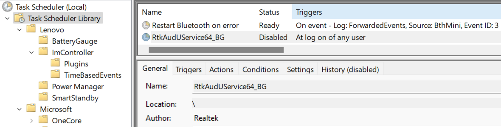
This has stopped the choppy/garbled audio problems
- From Lenovo: "Camera Settings", "Display Refresh" (to adjust the color temperature of the OLED display, which will only be needed in a few years), "Pen Settings" (to adjust the functions of my Wacom pen buttons even if I suspect it could be done from Windows settings) and "Thinkpad Compact Keyboard with Trackpoint Driver" for the "scroll after a middle click" feature:
In the Task Manager (Ctrl-Alt-Del), I've disabled everything but Onedrive: the Wacom pen and middle-click scroll still work perfectly fine, which means these things weren't needed much anyway, while leaving them disable gets me a faster start and more free RAM!
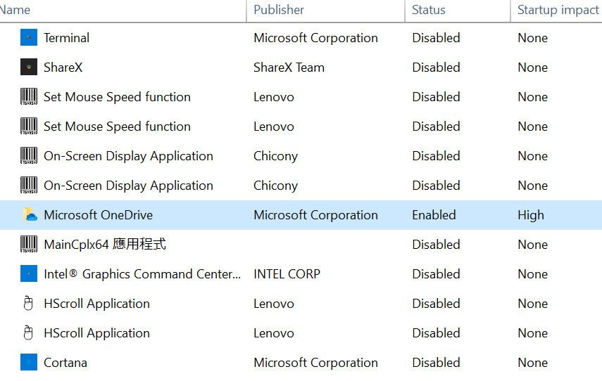
In the Task Scheduler, go to disable every ImController and SmartStandby service - including the child services for ImController in Plugins and TimeBasedEvents.
They work poorly anyway, and you're not going to need SmartStandBy as your device will never enter S4 sleep thanks to the great ACPI S0ix power saving and the tweaks we'll add!
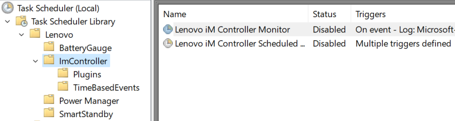
Seriously, anything you see in these folders and subfolder, disable it: it will save you power, CPU cycles, and headaches when the software dysfunctions (which is "far too often")
2.5 The special case of Lenovo Vantage
After configuring a battery charge ceiling, why keep Lenovo Vantage? (or even the ad-free Commercial Vantage if you're lucky like I was)
In theory, it gets you the latest drivers from Lenovo.
In practice, they have abandonned the X1 Fold: the only updates you get are because Lenovo changed something in one of their software or drivers that is common to a wide range of hardware. It might benefit someone, but that person is unlikely to be you.
How Vantage works is tricky: Lenovo created a fake device, that can then beg Windows Update to be installed: this is how Lenovo Vantage manages to invite itself on your clean vanilla Windows 11 install, even after nuking the Windows RE partition!! I believe it's done in the ACPI tables (parent: HTREE\ROOT\0) to survive full reinstall - which is similar to how Computrace works!
To remove it once and for all, we'll disable this fake device: right click on the start button or press Win-X then M to open the device manager: disable what pretends to be a "System device" and that's called "System interface foundation V2 device": right click on it and select disable, which will change the icon like that:
It's part of Lenovo Vantage through imcontroller, just to pester Windows to install Lenovo Vantage - nevermore!
Once it looks like that, you can go to Settings/Apps to remove Lenovo Vantage, and it won't come back from the grave ever again!
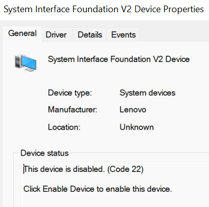
Make sure to also uninstall the Vantage service, a dependency of Vantage proper that isn't automatically uninstalled otherwise:
(If you really want Vantage, you can try to install Commercial Vantage, it's the Pro version of Vantage usually found in corporate deployments and freely available in the Microsoft store; its only advantage is the lack of ads)
3. Optimizations
There are a few remaining bugs related to the Intel drivers we need to fix: 1) sometimes the Bluetooth or Wifi stops working 2) you don't have enough RAM for widgets 3) power savings must be configured
3.1. Restarting Intel drivers when they crash to make the Fold stable
Create the following files, for example in C:\NetTools\X1FG1 (the name of my X1 Fold Gen1) or C:\NetTools\host-specific (that's my network synchronized folder where I keep host-specific scripts and tools)
bt-restart.js:
var wshShell = new ActiveXObject("WScript.Shell");
wshShell.Run('%SystemRoot%\\system32\\WindowsPowerShell\\v1.0\\powershell.exe -ExecutionPolicy Bypass -File "C:\\NetTools\\host-specific\\bt-restart.ps1"', 0, false);
bt-restart.ps1:
#If (-not ([Security.Principal.WindowsPrincipal][Security.Principal.WindowsIdentity]::GetCurrent()).IsInRole([Security.Principal.WindowsBuiltInRole] "Administrator")) {
# $Arguments = "& '" + $MyInvocation.mycommand.definition + "'"
# Start-Process powershell -Verb runAs -ArgumentList $Arguments
# Break
#}
function Show-Toast {
Param (
[Parameter(Mandatory = $true, ValueFromPipeline = $true)]
[ValidateNotNullOrEmpty()]
[string] $ToastText
)
[Windows.UI.Notifications.ToastNotificationManager, Windows.UI.Notifications, ContentType = WindowsRuntime] > $null
$Template = [Windows.UI.Notifications.ToastNotificationManager]::GetTemplateContent([Windows.UI.Notifications.ToastTemplateType]::ToastText02)
$RawXml = [xml] $Template.GetXml()
($RawXml.toast.visual.binding.text|where {$_.id -eq "1"}).AppendChild($RawXml.CreateTextNode($ToastText)) > $null
$SerializedXml = New-Object Windows.Data.Xml.Dom.XmlDocument
$SerializedXml.LoadXml($RawXml.OuterXml)
$Toast = [Windows.UI.Notifications.ToastNotification]::new($SerializedXml)
$Toast.Tag = "PowerShell"
$Toast.Group = "PowerShell"
$Toast.ExpirationTime = [DateTimeOffset]::Now.AddMinutes(1)
$Notifier = [Windows.UI.Notifications.ToastNotificationManager]::CreateToastNotifier("PowerShell")
$Notifier.Show($Toast);
}
# Class used to be Net, now is Bluetooth:
# This could use $_.Class -eq "Bluetooth" -and
# However the name alone is discriminative enough
$d= Get-PnpDevice| where {$_.friendlyname -eq "Intel(R) Wireless Bluetooth(R)" -and $_.status -eq "Error"}
if ($null -ne $d) {
$d | Disable-PnpDevice -Confirm:$false
$d | Enable-PnpDevice -Confirm:$false
$d | Show-Notification
}
The js files will launch an unvisible powershell restarting the driver whenever the internal Intel Ax200 crashes - which was often enough to make me write a toast notification for the Bluetooth part, so that I'd at least know why my wireless keyboard has stopped working!!
You might still have to turn on and off bluetooth from the Quick Actions menu (Win A or click on the wifi icon on the right of the taskbar), but it's become a very rare occurence.
To make that automatic, use the Task Scheduler to trigger the script on the Bluetooth crash event:
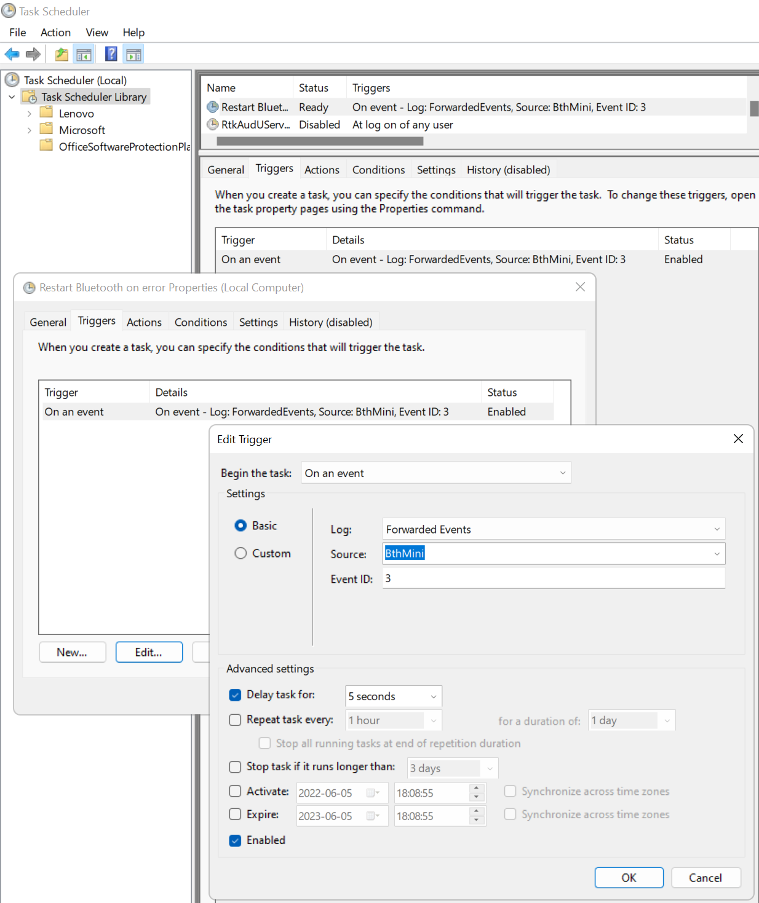
The action associated to this event is starting the javascript:
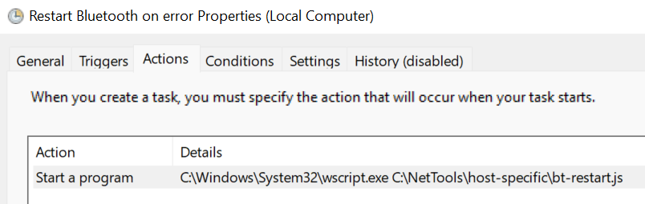
In the "General" tab, give it the highest privileges to allow restarting the driver. You should do that whether you are logged in or not (as such crashes can happen at anytime), but since I'm always logged on, I've left it as is:
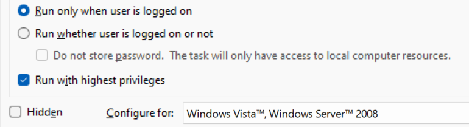
Now it works great! And nothing freezes anymore (**), which is even better!
For whatever reason, the crashes also impacted the touchscreen driver in Windows 10, causing the Fold to look unresponsive while it was still working - only you couldn't do anything at all, since you had no Bluetooth, no Wifi and no touchscreen either, so you had to reboot it!
After experimenting with Linux, I believe this is due to the hardware configuration: both the Bluetooth device and the Intel touchscreen device are connected to the Intel LPSS UART: https://github.com/quo/ithc-linux
Fixing the Bluetooth seems to be most of that's needed for the touchscreen to remain active.
Yesterday, I've ever had one touchscreen freeze since then (hence the **), which caused me to complete the Bluetooth restart script... with a WIFI restart script!
At first, the WIFI crash seems to causes a temporary loss of the connection, which Windows can generally recover from, while the Wi-Fi Direct Virtual drivers aren't that lucky and get stuck in error mode. Then, if you're lucky, your WIFI will reconnected. If not, your touchscreen might crash.
Wifi direct is rarely useful, but while I'm fixing this driver mess, why not take the opportunity to make it work?
My current WIFI scripts is:
wifi-restart.ps1:
function Show-Toast {
Param (
[Parameter(Mandatory = $true, ValueFromPipeline = $true)]
[ValidateNotNullOrEmpty()]
[string] $ToastText
)
[Windows.UI.Notifications.ToastNotificationManager, Windows.UI.Notifications, ContentType = WindowsRuntime] > $null
$Template = [Windows.UI.Notifications.ToastNotificationManager]::GetTemplateContent([Windows.UI.Notifications.ToastTemplateType]::ToastText02)
$RawXml = [xml] $Template.GetXml()
($RawXml.toast.visual.binding.text|where {$_.id -eq "1"}).AppendChild($RawXml.CreateTextNode($ToastText)) > $null
$SerializedXml = New-Object Windows.Data.Xml.Dom.XmlDocument
$SerializedXml.LoadXml($RawXml.OuterXml)
$Toast = [Windows.UI.Notifications.ToastNotification]::new($SerializedXml)
$Toast.Tag = "PowerShell"
$Toast.Group = "PowerShell"
$Toast.ExpirationTime = [DateTimeOffset]::Now.AddMinutes(1)
$Notifier = [Windows.UI.Notifications.ToastNotificationManager]::CreateToastNotifier("PowerShell")
$Notifier.Show($Toast);
}
# FIXME: make the name and class parameters
# to have 1 script for both Bluetooth and Wifi
$d = Get-PnpDevice| where {$_.Class -eq "Net" -and $_.friendlyname -match "Wi-Fi" -and $_.status -eq "Error" }
if ($null -ne $d) {
$d | Disable-PnpDevice -Confirm:$false
$d | Enable-PnpDevice -Confirm:$false
$d | Show-Notification
}
The wifi-restart.js is identical, except with a different name inside (wifi-restart.ps1 instead of bluetooth-restart.ps1) and the Task Scheduler events are Forwarded Events from WLAN-AutoConfig for 3 different Event IDs : 8002, 8004, and 10002
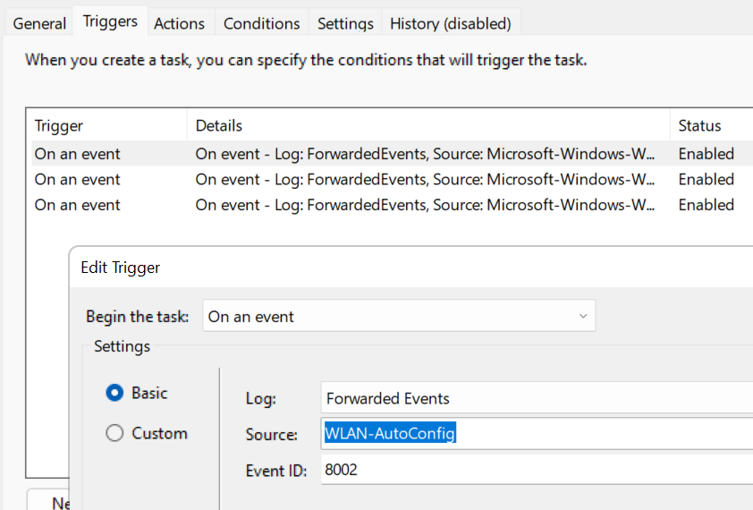
This Wifi restart will be completed by another script that disable Wifi and mutes the volume when going to sleep, the only way to guarantee your Fold will sleep for real!
3.2. Disable Widgets
Widgets is a RAM hog even worse than Edge, as it's a new feature that hasn't been optimized yet.
You can't afford that with just 8G of RAM like on the Fold, so on't waste time trying to fix the currently unfixable. Instead, let Microsoft try to fix the feature, and in the meantime don't use it and save your RAM: right click on the start menu or press Win-X R to run gpedit.msc
Then disable widgets in gpedit.msc : Local Computer Policy / Computer Configuration > Administrative Templates > Windows Components > Widgets
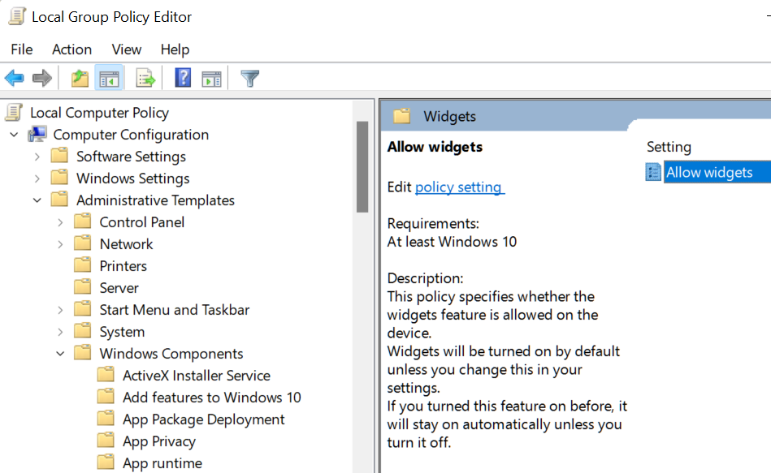
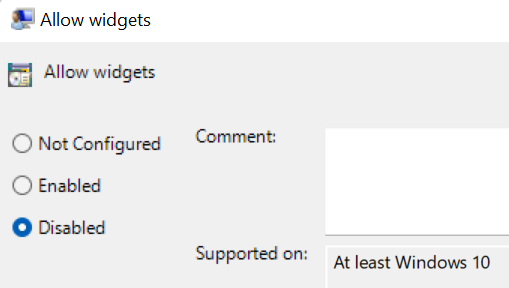
3.3. Power savings must be configured
Once your Fold becomes stable and has enough RAM to do things you want without slowing down to a crawl, the most imporant thing to do next is to make it save power.
This is a complicated setting, which requires multiple actions!
3.3.1. Disabling connected standby
Connected standby was announced as an important feature of ACPI S01x - back when Windows 8 was new, 3 versions ago and 8 years ago in 2014.
In the beginning, like most brand new and ambitious technologies, it was bad. I know because I was learning stats, so I had gotten myself a very nice computer to go to class with. It had problems sleeping, so I got myself a "new to me" Thinkpad X60 that worked better.
8 years later, it's still bad on many platforms it fails at its own requirement: "The hardware requirements extend to battery life, in that systems must not drain more than 5% of battery capacity while idle over a 16-hour period" https://en.wikipedia.org/wiki/InstantGo
Worse, it has aged like radioactive milk, with Dell now saying you shouldn't even try transporting your laptop in a backpack! I don't think they should be legally allowed to call this Dell device a """laptop""" if transporting the Dell device in any sleep mode voids its warranty: https://news.ycombinator.com/item?id=28639952
I'm ready to cut some slack, but cmon Intel, YOU ONLY HAD ONE JOB! And you've had EIGHT YEARS. Yet you still can't make a driver that won't even crash in practice as we'll see below!
And even without connected standby, the best you can do on the Fold and many Dells is 5% in 12h: I know because I've spent way too much time trying to fix your mistakes.
So how exactly do you think you can do better, while adding the burden of intermittent Wifi connections?
Until you've proven me you can do your job and match the requirements FROM YOUR OWN SPECS, with YOUR OWN DRIVERS, and if not at least do your best in a way that WILL NOT CRASH THE PERIPHERALS THEMSELVES *BUT ALSO OTHER DEVICES* (like my poor touchscreen...), connected standby is NOT WELCOME on my devices!
To cleanse connected standby with fire, righ click on start on press Win-X A to start an administrative powershell then type:
powercfg /setdcvalueindex scheme_current sub_none F15576E8-98B7-4186-B944-EAFA664402D9 0 powercfg -setdcvalueindex scheme_current sub_none connectivityinstandby 0
RIP connected standby, a little angel gone too soon. No actually scratch that, YOU HORRIBLE MONSTROSITY, BURN IN HELL FOR HAVING WASTED TOO MANY HOURS OF MY LIFE!
And yes, I mean every word of it, maybe because I'm a snobby audiophile, I stream FLAC files in LDAC 990kbps to my Sony 900n wireless headphones, it's not like I'll miss online music which is the only advantage Wifi would get me in connected standby anyway...
3.3.2. Rebuilding hibernation
Unlike connected standby, hibernation isn't bad: it's the old ACPI S4 that writes the RAM to the drive, to fully power off your device: if nothing is powered-on, you can't drain the battery! (head-taps meme lol)
But connected standby doesn't want you to be happy: even long after it's dead and gone, connected standby wants you to suffer: when you remove it, connected standby will try to take down hibernation mode as its final move.
Fortunately, that's an easy fix: in the same administrative PowerShell, run:
powercfg /h off powercfg /h on
That's all you should need if you didn't tweak Windows partitions! (hibernation depends on Windows RE and the BCD, but that's another story)
3.3.3. Making hibernation not just great again but better, stronger!
Let's not stop there: "we can rebuild him; we have the technology" to make it BETTER!
What's a better hibernation? An hibernation that will only happen when you need it.
Windows is quite clever: there're settings so that hibernation will be engaged only if the power budget is exhausted. Unfortunately, the setting is based on the specs: this means Windows will give up on suspend if battery measurements say the hardware can't hold to the specs.
The specs say 5%, but to the best of my knowledge, that's wishful thinking on most computers. Given that we can achieve 0.5%/h, let's give it a more reasonable 20% (so 40 hours):
You can inspect the current values with:
powercfg /qh scheme_current sub_presence standbybudgetpercent
Power Scheme GUID: 381b4222-f694-41f0-9685-ff5bb260df2e (Balanced)
GUID Alias: SCHEME_BALANCED
Subgroup GUID: 8619b916-e004-4dd8-9b66-dae86f806698 (Presence Aware Power Behavior)
Power Setting GUID: 9fe527be-1b70-48da-930d-7bcf17b44990 (Standby Budget Percent)
GUID Alias: STANDBYBUDGETPERCENT
Minimum Possible Setting: 0x00000000
Maximum Possible Setting: 0x00000064
Possible Settings increment: 0x00000001
Possible Settings units: %
Current AC Power Setting Index: 0x00000000
Current DC Power Setting Index: 0x00000005
The 5 on the last line means 5%, which you'll never get, meaning your Fold will give up too early and go into suspend, which will make it a bad experience on wakeup because then it will resume slowly... which is why actually Lenovo wrote SmartStandBy!
To avoid all this non-sense, in an administrative powershell, type:
powercfg -setdcvalueindex scheme_current sub_presence standbybudgetpercent 20%
This will give you a great experience without the need of Lenovo SmartStandBy (which you already removed if you've been following that guide!)
3.4. Protect your OLED against burn-in
OLED screens are sensitive to burn-in, also called ghosting, as the "ghost" of an image can remain visible on your screen if you've shown this static image for too long or too often to the point it has physically damaged the screen.
3.4.1. The best screen saver to save your screen is to display nothing!
This is nothing new: screen savers were invented to protect against that: https://en.wikipedia.org/wiki/Screen_burn-in
However, OLED screens consume far less power when showing a fully black image, with black defined as (00,00,00) in RGB, meaning a deep OLED black, not just a "very dark shade grey".
You can save both your screen, your battery life, power and the environment by setting your screen to turn off after 1 minute, and the account to lock after 2 minutes (120 seconds), for both DC (battery) and AC (when plugged):
powercfg.exe -change -monitor-timeout-dc 60 powercfg.exe -change -monitor-timeout-ac 60 powercfg.exe /SETACVALUEINDEX SCHEME_CURRENT SUB_VIDEO VIDEOCONLOCK 120 powercfg.exe /SETDCVALUEINDEX SCHEME_CURRENT SUB_VIDEO VIDEOCONLOCK 120
3.4.2. Another screen saver is to hide the taskbar and titlebar
Both the tasbar and titlebar remain in position: this can be bad for your screen. Set the taskbar to autohide in system preferences which you can quickly open with Win-I
A great powertool is nircmd by Nir Sofer: it can help you control the transparency of every window, including the taskbar! Get it at the bottom of the page on https://www.nirsoft.net/utils/nircmd.html
This way, when you show up your taskbar, it will be translucent, meaning you will still be able to see your actual window content through the taskbar!
This requires more advanced settings with AHK or Task Scheduler, but to try the effect type:
nircmd.exe win trans class Shell_TrayWnd 128
To turn it back to normal:
nircmd.exe win trans class Shell_TrayWnd 100
There are many things you can do with nircmd, it's a wonderful tool!
If you want that done automatically, use the Task Scheduler to run this command when you login into your account, as we did before with the Intel Driver restarter.
3.5. Do not disable indexing
Windows indexing is bad.
In theory, you could disable the service, or let it be but after excluding everything from indexing, by recursively applying that change to C:\
In practice, many things inside Windows depend on indexing, so try to not disable it: instead, use "Everything", installed as a service so it won't nag you with the administrative privilege required windows: https://www.voidtools.com/
It works much better, giving results almost instantly and changing them as you type!
If you like it, you can later map it to a shortcut in something like AHK
3.6. Let your CPU go to 0%
In the control panel, the mininum CPU is set to 5%. It seems to leftover from a time where 100% idle CPU could cause some crash.
We live in 2022, so bring this setting to a good value for current computers:
powercfg -setacvalueindex SCHEME_CURRENT SUB_PROCESSOR PROCTHROTTLEMIN 5
Apply the changes immediately with:
powercfg.exe -setactive SCHEME_CURRENT
This is supported by guides like https://www.minitool.com/lib/minimum-processor-state.html even if there've been some serious discussions for gamers https://www.tenforums.com/gaming/176759-whats-recommended-minimum-processor-state.html
3.7 Stopping Intel Wifi and muting Intel audio to save battery during sleep
These are 2 very important things to do if you want to get a battery discharge rate aroud 0.5%/h in ACPI S01x with instant resume!
First, go to Task Scheduler to create tasks for sleep and resume.
Let's start with sleep: the trigger will be System Source: Kernel-Power EventID: 506, which means going into sleep:
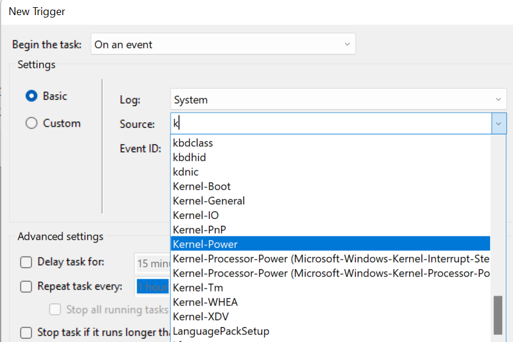
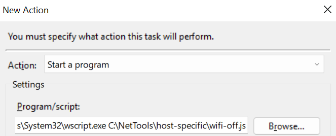
Make the trigger perform the action without any condition:
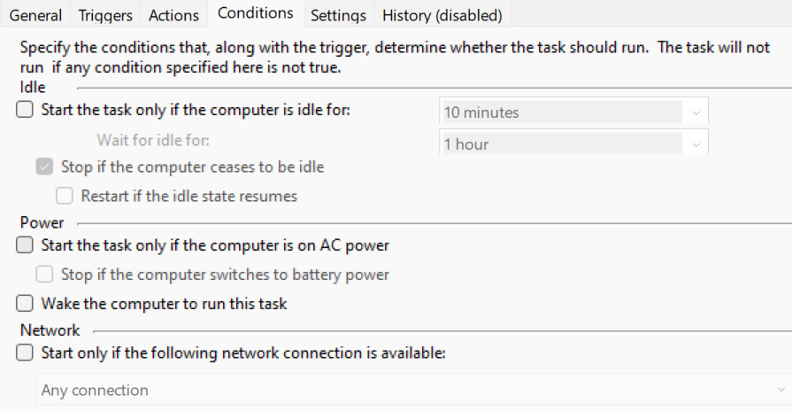
Give the highest privileges to the action, and let it run whether you are logged in or not (in case of a Windows Update):
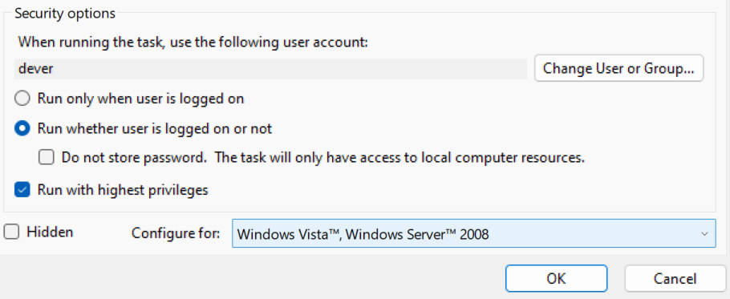
Do the same to turn wifi back on when waking up ("resuming") after sleep: the only 2 differences are:
- the script name:
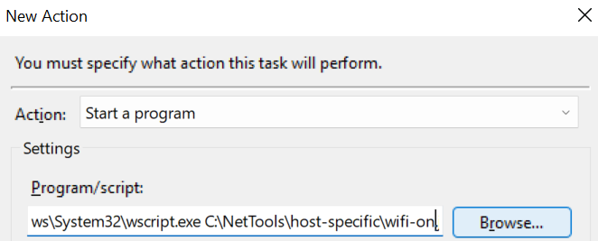
- and the Event ID being 507 (wakeup) and
As you've noticed, these depend on 3 scripts:
Here's what wifi-off.js looks like:
var wshShell = new ActiveXObject("WScript.Shell");
wshShell.Run('%SystemRoot%\\system32\\WindowsPowerShell\\v1.0\\powershell.exe -version 5.1 -ExecutionPolicy Bypass -File "C:\\NetTools\\host-specific\\setWifiState.ps1" -WifiStatus Off', 0, false);
wshShell.Run('C:\\NetTools\\nircmdc.exe mutesysvolume 1', 0, false);
wshShell.Run('C:\\NetTools\\nircmdc.exe setsysvolume 0', 0, false);
And what wifi-on.js looks like:
var wshShell = new ActiveXObject("WScript.Shell");
wshShell.Run('%SystemRoot%\\system32\\WindowsPowerShell\\v1.0\\powershell.exe -version 5.1 -ExecutionPolicy Bypass -File "C:\\NetTools\\host-specific\\setWifiState.ps1" -WifiStatus On', 0, false);
;wshShell.Run('C:\\NetTools\\nircmdc.exe mutesysvolume 0', 0, false);
;wshShell.Run('C:\\NetTools\\nircmdc.exe setsysvolume 40000', 0, false);
As you can see, they are calling nircmd to mute the audio (surely you have installed nircmd as suggested? if not, now is the time!) and a script called setWifiState.ps1 which contains:
[CmdletBinding()] Param (
[Parameter(Mandatory=$true)][ValidateSet('Off', 'On')][string]$WifiStatus
)
Add-Type -AssemblyName System.Runtime.WindowsRuntime
$asTaskGeneric = ([System.WindowsRuntimeSystemExtensions].GetMethods() | ? { $_.Name -eq 'AsTask' -and $_.GetParameters().Count -eq 1 -and $_.GetParameters()[0].ParameterType.Name -eq 'IAsyncOperation`1' })[0]
Function Await($WinRtTask, $ResultType) {
$asTask = $asTaskGeneric.MakeGenericMethod($ResultType)
$netTask = $asTask.Invoke($null, @($WinRtTask))
$netTask.Wait(-1) | Out-Null
$netTask.Result
}
[Windows.Devices.Radios.Radio,Windows.System.Devices,ContentType=WindowsRuntime] | Out-Null
[Windows.Devices.Radios.RadioAccessStatus,Windows.System.Devices,ContentType=WindowsRuntime] | Out-Null
Await ([Windows.Devices.Radios.Radio]::RequestAccessAsync()) ([Windows.Devices.Radios.RadioAccessStatus]) | Out-Null
$radios = Await ([Windows.Devices.Radios.Radio]::GetRadiosAsync()) ([System.Collections.Generic.IReadOnlyList[Windows.Devices.Radios.Radio]])
$wifi = $radios | ? { $_.Kind -eq 'WiFi' }
[Windows.Devices.Radios.RadioState,Windows.System.Devices,ContentType=WindowsRuntime] | Out-Null
Await ($wifi.SetStateAsync($WifiStatus)) ([Windows.Devices.Radios.RadioAccessStatus]) | Out-Null
Just copy paste that in the notepad.
3.8 That's all, folks!
There could be other settings worth tweaking, but for now, the battery life seems good enough for me.
If you want more, check guides like https://gist.github.com/raspi/203aef3694e34fefebf772c78c37ec2c where they try to show and tweak everything. Even if that's for a raspberry pi, it's the same Windows running on it! The interesting settings should be:
- USB 3 Link Power Mangement
- NVMe Idle Timeout
- NVMe Power State Transition Latency Tolerance
- Link State Power Management (called "ASPM" on Linux)
There're many resources like https://gist.github.com/Dark4Codrutz/2fb0adde19b0b3a56ec2ba572d25486e giving ideas, but I like to understand what I do (and why).
A large amount of these tweaks goes against my ideas of "minimalism", like:
- Power Policy:Video quality (Plugged In)
- Enables Windows Media Player to optimize for quality or power savings when playing video
- Quality Mode: Optimize for Video Quality
3.9 No, what about the other settings? Pleaaase??
If you want, but this is experiental!
After optimizing the battery life for ACPI S01x (something very important to me) I'm now working on optimizing the battery life when the device is in use.
It's a work-in-progress, but I can already recommend enabling the following: in the Start menu, type "Edit plan settings"
_Optimization/pasted_image048.png)
This will open the control panel where you can change the plan settings, like:
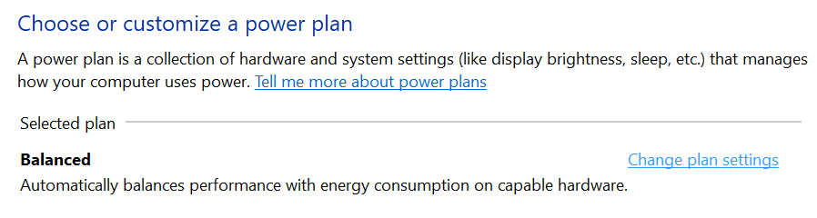
Select "Change advanced power settings"
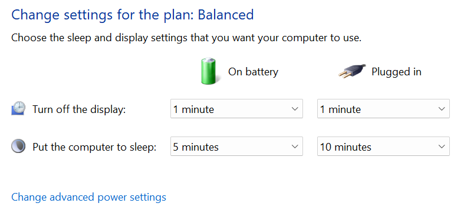
You may not get all the settings visible until you unhide them with specific commands, like to connectedstandy options:
powercfg -attributes F15576E8-98B7-4186-B944-EAFA664402D9 -ATTRIB_HIDE
For example, Intel iGPU settings didn't show until a key was manually changed to 2 in HKEY_LOCAL_MACHINE\SYSTEM\CurrentControlSet\Control\Power\PowerSettings\44f3beca-a7c0-460e-9df2-bb8b99e0cba6\3619c3f2-afb2-4afc-b0e9-e7fef372de36
This can be done automatically with:
REG ADD HKLM\SYSTEM\CurrentControlSet\Control\Power\PowerSettings\44f3beca-a7c0-460e-9df2-bb8b99e0cba6\3619c3f2-afb2-4afc-b0e9-e7fef372de36 /v Attributes /t REG_DWORD /d 2 /f
powercfg -attributes 44f3beca-a7c0-460e-9df2-bb8b99e0cba6 3619c3f2-afb2-4afc-b0e9-e7fef372de36 -ATTRIB_HIDE
Likewise for USB3:
powercfg -attributes 2a737441-1930-4402-8d77-b2bebba308a3 d4e98f31-5ffe-4ce1-be31-1b38b384c009 -ATTRIB_HIDE
REG ADD HKLM\SYSTEM\CurrentControlSet\Control\Power\PowerSettings\2a737441-1930-4402-8d77-b2bebba308a3\d4e98f31-5ffe-4ce1-be31-1b38b384c009 /v Attributes /t REG_DWORD /d 2 /f
And WIFI:
powercfg -attributes 19cbb8fa-5279-450e-9fac-8a3d5fedd0c1 12bbebe6-58d6-4636-95bb-3217ef867c1a -ATTRIB_HIDE
REG ADD HKLM\SYSTEM\CurrentControlSet\Control\Power\PowerSettings\19cbb8fa-5279-450e-9fac-8a3d5fedd0c1\12bbebe6-58d6-4636-95bb-3217ef867c1a /v Attributes /t REG_DWORD /d 2 /f
You should then configure powersaving on both AC and DC: inspect the currect valuess with powercfg /l then change then with:
powercfg /SETDCVALUEINDEX SCHEME_CURRENT 19cbb8fa-5279-450e-9fac-8a3d5fedd0c1 12bbebe6-58d6-4636-95bb-3217ef867c1a 3
powercfg /SETACVALUEINDEX SCHEME_CURRENT 19cbb8fa-5279-450e-9fac-8a3d5fedd0c1 12bbebe6-58d6-4636-95bb-3217ef867c1a 3
This is because, or some weird reason, the Intel WIFI power savings on battery are ignored, and the only way to impact them (if we are to believe powercfg /energy) is to also change the plugged-in settings.
Otherwise, powercfg reports the "Radio Power Policy is Maximum Performance":
Power Policy:802.11 Radio Power Policy is Maximum Performance (Plugged In) The current power policy for 802.11-compatible wireless network adapters is not configured to use low-power modes.
This might be related to the Power Plan used by Windows 11:
Plan Name OEM Balanced
Plan GUID {381b4222-f694-41f0-9685-ff5bb260df2e}
Even if there's no reason to use plugged in value on battery (!!!), the only way I got powercfg to change its tune was to change both with the above. It then looks like:
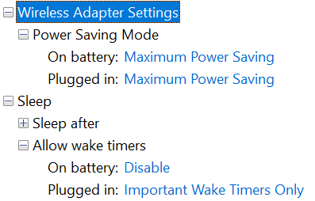
If needed, you can later reverse that with
powercfg -setacvalueindex 381b4222-f694-41f0-9685-ff5bb260df2e 19cbb8fa-5279-450e-9fac-8a3d5fedd0c1 12bbebe6-58d6-4636-95bb-3217ef867c1a 0
The wake times are related to connected standy, which I don't want or need even if the computer is plugged in as it may cause Windows Update (and I don't like to wake up to a warm computer).
I'm still experimenting, but for now I have
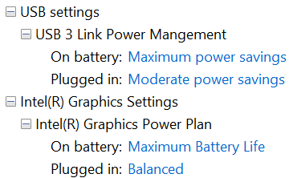
USB settings are mostly for the internal bus and devices, same for the PCI ASPM which shouldn't even be perceptible unless the device firmware has a bug, something unfortunately frequent for NVMe drives on Linux
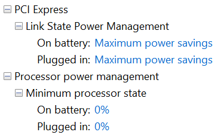
The CPU settings are 0-100 following the "rush-to-idle" modern theory of powersaving.
For the Wifi settings in preferences, there're too many to use screenshots, but in case it may help here're my current settings thanks to powershell:
powershell Get-NetAdapterAdvancedProperty -Name "Wi-Fi" -AllPropertie
Name DisplayName DisplayValue ---- ----------- ------------ Wi-Fi Channel Width for 2.4GHz Auto Wi-Fi Channel Width for 5GHz Auto Wi-Fi Mixed Mode Protection RTS/CTS Enabled Wi-Fi -- -- Wi-Fi U-APSD support Disabled Wi-Fi -- -- Wi-Fi Throughput Booster Disabled Wi-Fi 802.11a/b/g Wireless Mode 6. Dual Band 802.11a/b/g Wi-Fi Preferred Band 1. No Preference Wi-Fi Transmit Power 3. Medium Wi-Fi Roaming Aggressiveness 3. Medium Wi-Fi Fat Channel Intolerant Disabled Wi-Fi Wake on Pattern Match Disabled Wi-Fi Wake on Magic Packet Disabled Wi-Fi GTK rekeying for WoWLAN Enabled Wi-Fi ARP offload for WoWLAN Enabled Wi-Fi NS offload for WoWLAN Enabled Wi-Fi Sleep on WoWLAN Disconnect Enabled Wi-Fi MIMO Power Save Mode Auto SMPS Wi-Fi Global BG Scan blocking Never Wi-Fi Packet Coalescing Enabled Wi-Fi 802.11n/ac/ax Wireless Mode 4. 802.11ax
4. Microsoft Office
Let's do that the US army way: "yesterday technology, tomorrow!"
4.1 Just... why?
I love light/fast and responsive software, so I love Microsoft Office.
My favorite versions are 2007 and 2010 - yes, you've read correctly, something over 10 years old that I never got to use when it was brand new, even if I would have needed it a few years later during my BA.
The reason I love old versions of Office is because they give you all the features *plus* a nice retro user interface *while* being more responsive than uglier modern apps.
Let's take it straight from Task Manager: Edge is a memory hog, even if changes like sleeping tabs have made it by far the best browser in Windows:
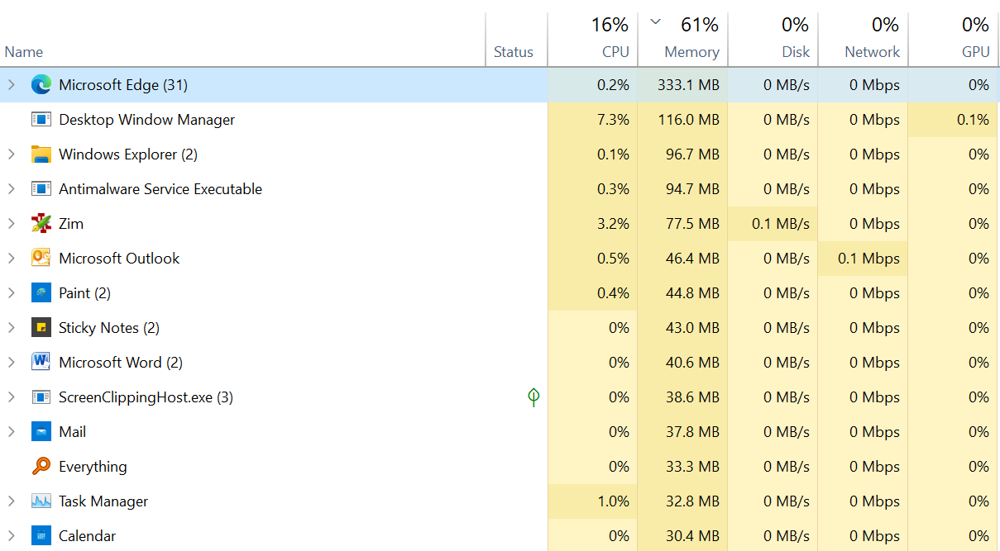
Zim is what I'm using to manage my notes write this guide, with screenshots bring cleaned in Paint
Let's put side-by-side what matters, Mail.app and Calendar next to a full-fledged Outlook:
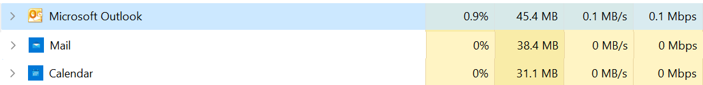
45M of RAM used will give you a great calendar and mail, compared to a so-so version in Mail.app that'll eat 38M by itself and still need another 30M to get you a so-so calendar.
Likewise, why use Wordpad when Word 2010 starts just as fast? Or why bother with OpenOffice when you can get the real deal, working with every .xlsx and .docx oddity that may be emailed to you?
Why use Office 365 when you can get a license that will never expire and never ask you for more money?
4.2 But it's not supported!
Yes it's not supported, LTS doesn't mean "forever", but it still works!
In my Settings/Updates/History, I have page and pages like:
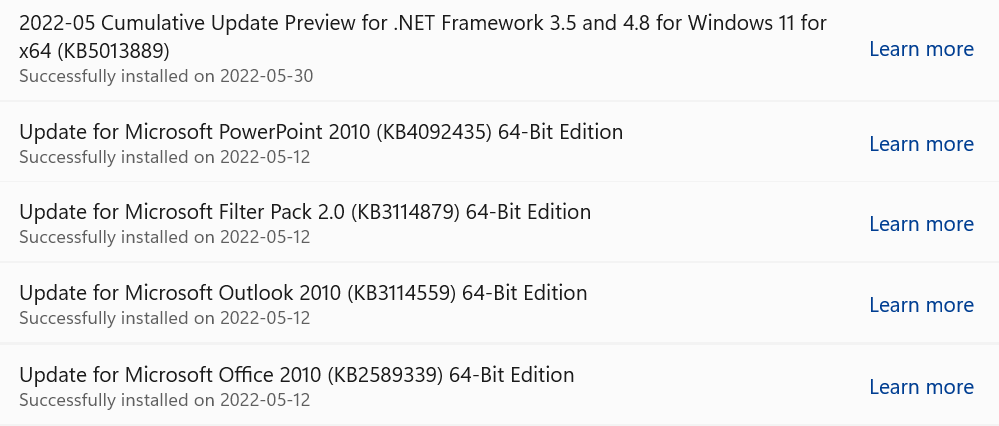
Apparently, Microsoft doesn't seem to like that it still works so well: they will nag you to pay for 365, but I like fast software, which 365 is everything but!
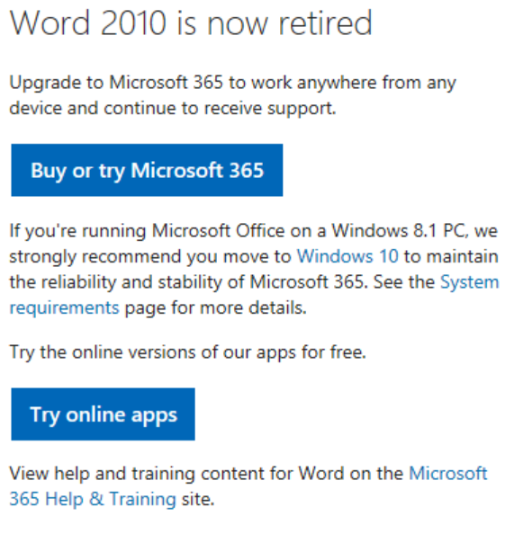
And I'm used to making things work even when they don't want to (like... the Fold!) so I don't need any hand holding - if it *can* work I'll *make* it work! So I'll support myself!
As you won't get any support, just buy whatever is the cheapest, brand new and still shrink wrapped off ebay.
And hey - here I'm, running Edge with a zillion of tabs, with another memory hog like Zim sitting right next to Office with both Word *and* Outlook opened, taking screenshots with many Paint still opened, a few Windows Terminals... but I'm barely using 2/3 of the RAM and 1/10th of the CPU!
Even more important: the system is extremely responsive, and I LOVE THAT!
4.3 How much does it costs?
It won't cost you much, as software it's cheap when it's that old!
Also, if you run Linux, you'll get a wonderful experience: even with wine, it's faster and uses far less RAM and disk than OpenOffice!
Both 2003 and 2007 are rated platinium (as in, everything works) on https://appdb.winehq.org/objectManager.php?sClass=application&iId=31 even if it says it's for the installer only:
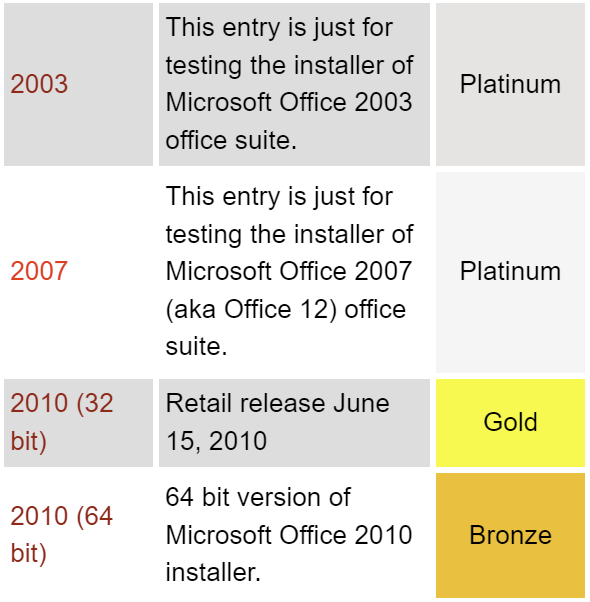
2007 is a "sweet point" : there's a 32 and a 64 bit version, it works great both on Linux (with Wine) and on Windows 10 and 11 (natively).
Look for brand new and sealed, as you don't want pirated software with a key that may have already been used: it goes for about $30 usually, today the best I could find was $40
At almost twice the price, 2010 is a bit expansive, but as you can install in on 5 devices and it'll never stop working, that's a steal!
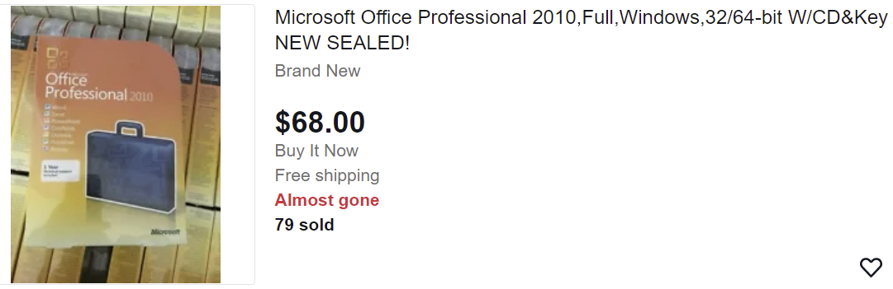
That's what I use on my fold (and no it doesn't show the activation key lol)
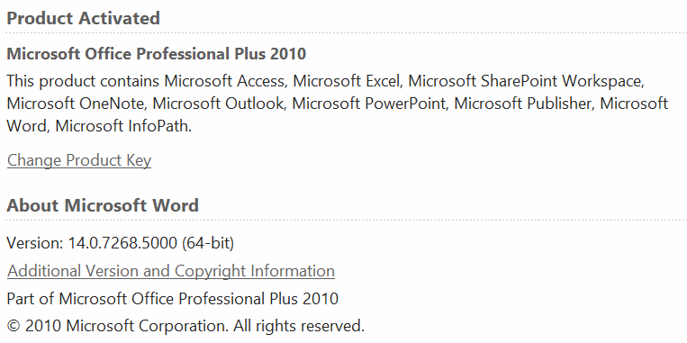
4.4 Making Office 2010 work on Windows 11
You don't need to do anything special: just let it fully install, don't enter your key until it's done installing all of its KB updates and rebooting a few times.
If you don't let it fully update, activation will fail with error 0x80070190 (ask me how I found out!) but the nice thing is you can try again later.
If you are in a hurry look for officesp2010-kb2687455-fullfile-x64-en-us which will give you most of the updates you need.
If you use gmail, look for Google Workspace Sync Microsoft Office "GWSMO" to let Outlook 2010 connect to gmail and get push notifications.
Microsoft has retired the venerable Internet Explorer, which can sometimes confuse Office 2010 if you don't have IE yet try to open html files.
Save the following in notepad as "office2010-with-edge.reg" and double click on it to add to your registry everything Office needs to know about opening html files on Windows 10+
Windows Registry Editor Version 5.00 [HKEY_LOCAL_MACHINE\SOFTWARE\Classes\htmlfile\shell\Open\Command] @="\"C:\\Program Files (x86)\\Microsoft\\Edge\\Application\\msedge.exe\" %1"
5. Linux software on Windows
If like me you like terminal software, install the Windows Terminal from Microsoft store. I used to recommend the Dev version, as it's already very stable, and get the good things faster.
But in 2022, there're no good reasons left to recommend it over the vanilla WT. However, that may change when we finally get Sixel support: https://github.com/microsoft/Terminal/issues/448 and light/dark theme synchronization.
The main limitation with the Fold is the 8G of RAM: it's not comfortable for WSL2. Instead, you should prefer WSL1 or Msys2
5.1. Option 1: WSL1 for Linux
If you are not familiar with Arch and pacman, just install WSL1 with a regular distribution:
dism.exe /online /enable-feature /featurename:Microsoft-Windows-Subsystem-Linux /all /norestart wsl --set-default-version 1 wsl --list --verbose
WSL1 is great, way more ambitious and innovative than the simple hypervisor model of WSL2. But besides admiring it, I can't help you much more than that, as it's not what I do.
5.2. Option 2: Msys2
Msys2 has a reputation of being hackish but it works great: it consumes less RAM than WSL2 for my needs, and it's existed for a long time so it's more polished than WSL1
Just go to msys2.org or find one of the many guides showing how to install msys2 and keeping it up-to-date with the `pacman -Syuu` mantras.
5.3. Windows Terminal or Mintty?
I love mintty, as it supports many things the Windows Terminal can't support yet, mostly ligatures (my favorite font is iosevka SS04) and sixels (if you don't know what that is, check https://github.com/csdvrx/sixel-gnuplot
However, Windows Terminal is evolving quickly, and I believe Microsoft will take the right decisions and add all the features required to make the Terminal experience better.
In the meantime, if you want something that looks like sixels, use my sixel-tmux https://github.com/csdvrx/sixel-tmux which is conveniently available for you on Arch through AUR : https://aur.archlinux.org/packages/sixel-tmux-git
5.4. Using Msys2 with WT insteal of mintty
Configure a Windows Terminal profile for it:
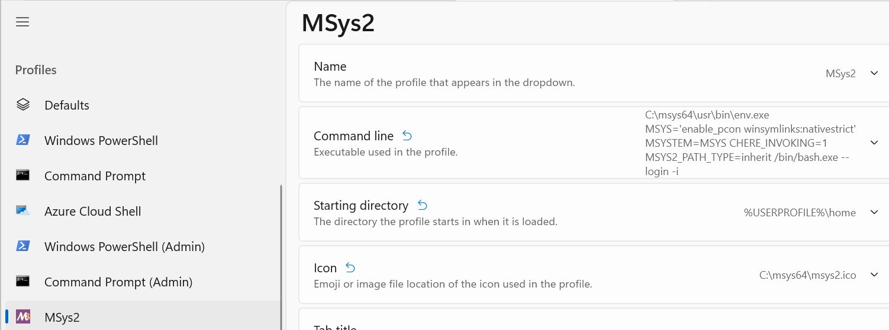
Command line:
C:\msys64\usr\bin\env.exe MSYS='enable_pcon winsymlinks:nativestrict' MSYSTEM=MSYS CHERE_INVOKING=1 MSYS2_PATH_TYPE=inherit /bin/bash.exe --login -i
Starting directory:
%USERPROFILE%\home
Icon:
C:\msys64\msys2.ico
It works very well:
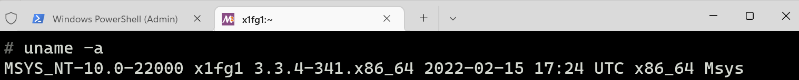
6. Anything else?
If you have ideas/suggestions, please submit them via github!